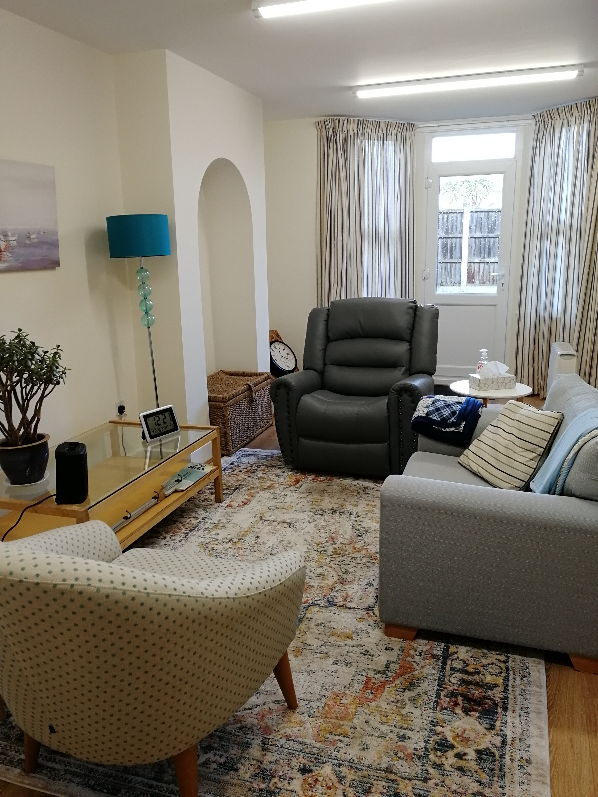

About Me
I am a qualified, registered and insured Counsellor. I am always amazed at the power a counselling session can hold and the ability of my clients to grow and change.
I will treat you honestly, with kindness and respect until you find the path forward. I won’t judge you, try to fix you or pretend I know the answers, but I will value you, sit with you in your grief, chaos, sadness or anxiety and together we might help you move forward and face the future.
I am continually looking for ways to support my clients and have recently taken further training in anxiety, issues with mental health and the menopause, gender identity and creative counselling ideas. I also teach counselling skills as I know the difference being listened to can make and want to support a new generation of counsellors.
If you have any questions about the process give me a call I offer a free 20 minute phone conversation so you can be assured that we are a good fit before we start.
My name is Debbie Livermore...
I am a qualified, registered and insured Counsellor. I am constantly learning both from my clients and from further training and professional development. I recently completed a certificate for Online and Telephone Counselling to make sure I was able to support my clients during lockdown.
I am always amazed at the power a counselling session can hold and the ability of my clients to grow and change.
About my services
-
My approach
I use a humanistic approach, which means I won’t judge you or tell you what I think you should do. The sessions are yours to use how you like, we can sit together in silence if that is what you need or you can talk about the issues that are troubling you, in a quiet, calm and confidential space.
Sometimes you may not even be sure what those issues are but together we can find a way to cope with the challenges life brings and I will be by your side as we explore those challenges and your feelings about them.

-
Taking the first step
I know how daunting it is to take the first step and reach out to a counsellor. It takes courage and strength and shows that you are ready to address the areas in your life that are causing you distress and unhappiness. We can look at these together at your own pace.
I believe that finding the right therapist is an important first step
-
The help I can offer
My clients bring a multitude of issues into my room. I’m here to listen.
I will show you empathy and support but never judge you.
I believe therapy works best when the relationship between counsellor and therapist is strong and we trust each other.
I offer an initial assessment session and then, provided we are both happy to proceed, we will agree to meet on a weekly basis. Usually this will be on the same day of the week, and at the same time of day.
Together we will discuss what you want to achieve from counselling. I offer counselling for many issues including stress, relationships, family problems, depression & feeling low, addiction, coping with change or wanting to make a change, loss of meaning, sexuality, abuse, bereavement, anger issues, self esteem, confidence, weight loss and anxiety.
I am also a trauma informed therapist and will take steps to make you feel both physically and emotionally safe in your sessions. Together we can look at the effects of trauma on the brain and I will take steps to avoid retriggering you during the session.
I offer the Rewind Technique. (Closure without disclosure) This is a comfortable and effective treatment that can greatly reduce, and even remove, traumatic or phobic symptoms quickly through relaxation and guided imagery, all without even having to talk about the details of the traumatic incident with me. You are in control of these sessions and if the technique is used.
-
What you can expect from a session
Our Sessions will be confidential. (there are some limits to this so that I can keep you safe, we will discuss those in the first session)
You set the pace of the sessions.
I offer regular reviews to ensure therapy is working for you and to shift focus as things change.
Our Sessions can be face to face, via Zoom/Skype and I also offer a walking, talking session if you find that being outdoors and moving helps you focus on your feelings.
You can have as many sessions as you need, there is no limit to how many sessions you have.
My commitment is to be there for you at an agreed time and place to ensure you are given the time and space you need to work through your issues and hopefully effect change.
-
Room Hire
Are you looking for a calm and tranquil space to work? I offer room rental for my room in Leigh-on-Sea, perfect for therapists, tutors or simply a place to come and use for your office away from home. I am based in the heart of town and there is access to a small, private garden.
The room is quiet, light, airy and warm. Big enough for a small group if you are looking for a venue for Peer Supervision but also cosy enough for one to one counselling.
There are 2 chairs and a 2 seater sofa, a table and chair for admin. Great WiFi and a small kitchen area if you need a cuppa.
You’d be welcome to join the small group of therapists who use the room. We are a friendly lot and meet half termly for peer supervision and support.
Rates are £10 per hour but may vary for whole day bookings. Contact me for availability.
